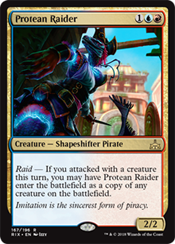
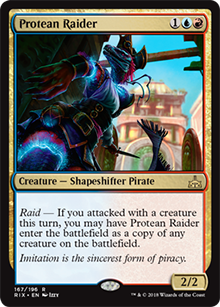

Pirates are, in my opinion, the best payoff for anyone choosing to play with a tribal deck. With a good diversity of mechanics and effects that this tribe offers, it is possible to build consistent control or aggro strategies, and when combined with other editions can result in a good midrange. One of the great advantages of playing with pirates is the possibility of fill the battlefield with creatures that control or favor the control of the game. It's like having two cards at the cost of one, which opens up plenty of room for other spells.
Two cards that deserve a major highlight are the Siren Stormtamer (U 1/1) and the Kitesail Freebooter (1B 1/2), as they are creatures that provide a good source of control during the early game, at the same time as are both evasive creatures (both possess Flying) that can attack virtually every turn, without major concerns, creating great potential to activate effects such as the Dowsing Ddagger, as well as leaving the way free to take advantage of Raid effects - all this without losing the mastery of controlling the opponent's game.
It is also impossible to speak of pirates and not mention the hostage taker (2UB 2/3), another great weapon of the pirate tribe. Used with due planning this creature is able to bring great advantage over the opponent, especially if you have mana to use its effect before it is subject to some removal. And the possibilities go even further with cards like Siren's Ruse and Release to the Wind, which allow you to perform an evasive, and at the same time offensive maneuver, for the cost of 1U or 2U and instant speed.
Finally, the strategy of UBR pirates is simple: use creatures as both control and offense at the same time, increasing their offending power as the game progresses and controlling the opponent's maneuvers, leading to "exhaustion." The starting hand is of the utmost importance to be able to open the advantage over the opponent as soon as possible, leaving the way clearer for answers as your opponent attempts to mount his strategy.
 

To close, the pirates can control a good mana base of any color, as there are many cards that create many treasures that generate mana of any color, making cards with a cost of mana of different colors are not so difficult to play, such as Admiral Beckett Brass, Protean Raider, Storm the Vault/Vault of Catlacan or even cards that have nothing to do with the deck, such as white and green.
Igor Dantas